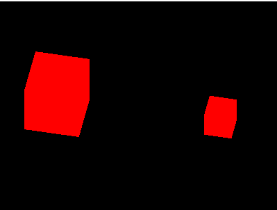

Three.js入门-2
Mesh（网格）
网格是由顶点、边、面等组成的物体，创建物体需要指定几何形状和材质，其中，几何形状决定了物体的顶点位置等信息，材质决定了物体的颜色、纹理等信息。
网格是最常用的一种物体，其他物体包括线段（Line）、骨骼（Bone）、粒子系统（ParticleSystem）等。
而创建网格:var mesh = new THREE.Mesh(geometry, material);，除了在构造函数中指定材质，在网格被创建后，也能对材质进行修改。
1 | // 如此，无论前面构造函数中material是什么，最后都会被红色的Lambert材质覆盖 |
位置、缩放、旋转
位置、缩放、旋转是物体三个常用属性，分别由THREE.Object3D类的scale、rotation、position三个属性实现，三个属性都是THREE.Vector3的实例，THREE.Vector3有x、y、z三个属性，分别对应3个方向，修改其值的方法是类似的。
THREE.Mesh继承自THREE.Object3D。
以修改位置为例：1
2
3
4
5
6
7// 只设置其中一个属性
mesh.position.z = 1;
// 同时设置多个属性
mesh.position.set(1.5, -0.5, 0);
// 或用一个新的Vector3实例覆盖
mesh.position = new THREE.Vector3(1.5, -0.5, 0);
动画
如何使用Three.js进行动态画面的渲染？
为了衡量画面切换速度，引入了每秒帧数FPS（Frames Per Second）的概念，是指每秒画面重绘的次数。FPS越大，则动画效果越平滑，当FPS小于20时，一般就能明显感受到画面的卡滞现象。当FPS足够大（比如达到60），再增加帧数人眼也不会感受到明显的变化，反而相应地就要消耗更多资源（比如电影的胶片就需要更长了，或是电脑刷新画面需要消耗计算资源等等）。因此，选择一个适中的FPS即可。对于Three.js动画而言，一般FPS在30到60之间都是可取的。
其实Three.js只是建立在js之上的封装的库而已，所以，通过setInterval是能够实现动画的，例如一个让图像随y轴旋转的动画:1
2
3
4
5id = setInterval(draw, 20); // 指定每20ms就更新一次y的角度
function draw() {
mesh.rotation.y = (mesh.rotation.y + 0.01) % (Math.PI * 2);
renderer.render(scene, camera); // 每次改变y的角度就重新渲染一次
}
而一般情况下，开发者不关心多久重绘一次，而只要能尽快的重绘就行了，此时可用requestAnimationFrame方法，通过它，浏览器会在合适的时候调用指定的函数，通常FPS能达到60。
而requestAnimationFrame方法的调用方式和setTimeout类似,取消则使用cancelAnimationFrame(id)：1
2
3
4
5
6id = requestAnimationFrame(draw);
function draw() {
mesh.rotation.y = (mesh.rotation.y + 0.01) % (Math.PI * 2);
renderer.render(scene, camera);
id = requestAnimationFrame(draw);
}
setInterval方法与requestAnimationFrame方法的区别较为微妙。
- 一方面，最明显的差别表现在setInterval可以手动设定FPS，而requestAnimationFrame则会自动设定FPS；
- 但另一方面，即使是setInterval也不能保证按照给定的FPS执行，在浏览器处理繁忙时，很可能低于设定值。当浏览器达不到设定的调用周期时，requestAnimationFrame采用跳过某些帧的方式来表现动画，虽然会有卡滞的效果但是整体速度不会拖慢，而setInterval会因此使整个程序放慢运行，但是每一帧都会绘制出来；
总而言之，requestAnimationFrame适用于对于时间较为敏感的环境（但是动画逻辑更加复杂），而setInterval则可在保证程序的运算不至于导致延迟的情况下提供更加简洁的逻辑（无需自行处理时间）。
stat.js
stat.js是Three.js的作者Mr. Doob的另一个有用的JavaScript库。很多情况下，我们希望知道实时的FPS信息，从而更好地监测动画效果。这时候，stat.js就能提供一个很好的帮助，它占据屏幕中的一小块位置，点击可以切换FPS和每帧渲染时间的动态折线图。
页面引入stat.js的文件后,简单使用如下：1
2
3
4
5
6
7
8
9
10
11
12
13
14
15
16
17
18
19
20
21var stat = null;
function init() {
stat = new Stats();
stat.domElement.style.position = 'absolute';
stat.domElement.style.right = '0px';
stat.domElement.style.top = '0px';
document.body.appendChild(stat.domElement);
// Three.js init ...
}
// 每次重绘渲染页面前后都需要调用，begin/end方法分别表示一帧的开始与结束：
function draw() {
stat.begin();
mesh.rotation.y = (mesh.rotation.y + 0.01) % (Math.PI * 2);
renderer.render(scene, camera);
stat.end();
}
外部模型
使用Three.js创建常见几何体是十分方便的，但是对于人或者动物这样非常复杂的模型使用几何体组合就非常麻烦了。一般模型是用更强大的建模工具制作，然后导入并添加到场景中。
支持格式
Three.js支持很多格式，而不同的格式是需要使用不同的辅助导入函数（loader）的，具体支持的格式和loader参考Three.js loaders
比如*.obj是最常用的模型格式，导入*.obj文件需要OBJLoader.js；导入带*.mtl材质的*.obj文件需要MTLLoader.js以及OBJMTLLoader.js。
示例如下：
光与影
图像渲染的丰富效果很大程度上也要归功于光与影的利用。真实世界中的光影效果非常复杂，为了使计算机模拟丰富的光照效果，提出了几种不同的光源模型（环境光、平行光、点光源、聚光灯等），在不同场合下组合利用，将能达到很好的光照效果。
AmbientLight（环境光）
环境光是指场景整体的光照效果，是由于场景内若干光源的多次反射形成的亮度一致的效果，通常用来为整个场景指定一个基础亮度。因此，环境光没有明确的光源位置，在各处形成的亮度也是一致的。
在设置环境光时，只需要指定光的颜色, hex是十六进制的RGB颜色信息，如红色表示为0xff0000。1
2var light = new THREE.AmbientLight(0xffffff); // 设置一个白色环境光
scene.add(light);
当环境光不是白色或灰色的时候，渲染的效果往往会很奇怪。因此，环境光通常使用白色或者灰色，作为整体光照的基础。
See the Pen Three.js - AmbientLight by XmoyKing (@xmoyking) on CodePen.
环境光并不在乎物体材质的color属性，而是ambient属性。ambient属性的默认值是0xffffff。因此，如果将这两个长方体设置为如下ambient属性，比如本来绿色和白色的两个方块在红色环境光下却呈现为全红：

PointLight（点光源）
点光源是不计光源大小，可以看作一个点发出的光源。点光源照到不同物体表面的亮度是线性递减的，因此，离点光源距离越远的物体会显得越暗。光在每个面上的亮度是不同的，对于每个三角面片，将根据三个顶点的亮度进行插值。
点光源的构造函数是THREE.PointLight(hex, intensity, distance)
- hex是光源十六进制的颜色值
- intensity是亮度，缺省值为1，表示100%亮度
- distance是光源最远照射到的距离，缺省值为0，不衰减
示例代码：1
2
3var light = new THREE.PointLight(0xffffff, 2, 100);
light.position.set(0, 1.5, 2); // 需要将点光源设置一个位置
scene.add(light);
DirectionalLight（平行光）
太阳光常常被看作平行光，这是因为相对地球上物体的尺度而言，太阳离我们的距离足够远。对于任意平行的平面，平行光照射的亮度都是相同的，而与平面所在位置无关。
平行光的构造函数是THREE.DirectionalLight(hex, intensity),参数含义同点光源类似。
示例代码：1
2
3var light = new THREE.DirectionalLight();
light.position.set(2, 5, 3);
scene.add(light);
这里设置光源位置并不意味着所有光从(2, 5, 3)点射出（如果是的话，就成了点光源），而是意味着，平行光将以矢量(-2, -5, -3)的方向照射到所有平面。因此，平面亮度与平面的位置无关，而只与平面的法向量相关。只要平面是平行的，那么得到的光照也一定是相同的。
SpotLight（聚光灯）
聚光灯是一种特殊的点光源，它能够朝着一个方向投射光线。聚光灯投射出的是类似圆锥形的光线，这与我们现实中看到的聚光灯是一致的。
其构造函数为THREE.SpotLight(hex, intensity, distance, angle, exponent),相比点光源，多了angle和exponent两个参数。
- angle是聚光灯的张角，缺省值是Math.PI / 3，最大值是Math.PI / 2
- exponent是光强在偏离target的衰减指数，缺省值是10,其中target需要在之后单独设置，缺省值为(0, 0, 0)
1 | light.position.set(x1, y1, z1); |
如果想让聚光灯跟着某一物体移动（就像真的聚光灯！），可以target指定为该物体：1
light.target = cube; // 此处的cube是一个THREE.Mesh
See the Pen Three.js - SpotLight by XmoyKing (@xmoyking) on CodePen.
阴影
在Three.js中，能形成阴影的光源只有THREE.DirectionalLight与THREE.SpotLight；而相对地，能表现阴影效果的材质只有THREE.LambertMaterial与THREE.PhongMaterial。
开启阴影需要如下3步：
- 在初始化时，告诉渲染器渲染阴影：
renderer.shadowMap.enabled = true; - 对于光源以及所有要产生阴影的物体调用：
xxx.castShadow = true; - 对于接收阴影的物体调用：
xxx.receiveShadow = true;
比如场景中一个平面上有一个正方体cube，想要让聚光灯照射在正方体上，产生的阴影投射在平面plane上，那么就需要对聚光灯light和正方体cube调用cube.castShadow = true; light.castShadow = true，对于平面调用plane.receiveShadow = true。
不过通常还需要设置光源的阴影相关属性，才能正确显示出阴影效果(建议直接查看官网阴影API文档):
- 对于聚光灯，需要设置shadow.camera.near、shadow.camera.far、shadow.camera.fov三个值，类比透视投影照相机，只有介于shadow.camera.near与shadow.camera.far之间的物体将产生阴影，shadow.camera.fov表示张角。
- 对于平行光，需要设置shadow.camera.near、shadow.camera.far、shadow.camera.left、shadow.camera.right、shadow.camera.top以及shadow.camera.bottom六个值，相当于正交投影照相机的六个面。同样，只有在这六个面围成的长方体内的物体才会产生阴影效果。
为了看到阴影照相机的位置，通常可以在调试时开启CameraHelper1
2var helper = new THREE.CameraHelper( light.shadow.camera );
scene.add( helper );
See the Pen Three.js - Shadow by XmoyKing (@xmoyking) on CodePen.
Shader（着色器）
着色器可以更灵活地控制渲染效果，结合纹理，可以进行多次渲染，达到更强大的效果。
渲染与着色器
其实着色器与渲染（Rendering）联系非常紧密。
一般的理解上，渲染就是将模型数据在屏幕上显示出来的过程，Three.js最强大之处就是让我们在无需知道图形学知识的前提下完成从建模到渲染的一整套工作。
在定义了场景中的物体、照相机、光源等等之后，渲染的结果就确定了吗？是否可以再次修改呢？
当然可以，通过着色器程序对GPU编程来控制渲染的结果。着色器是屏幕上呈现画面之前的最后一步，用它可以对先前渲染的结果做修改，包括对颜色、位置等等信息的修改，甚至可以对先前渲染的结果做后处理，实现高级的渲染效果。但是对于很多应用而言，并不需要着色器。
同样的模型、光源、照相机，但是不同的着色器，我们就能得到不同的渲染效果。着色器通常分为几何着色器（Geometry Shader）、顶点着色器（Vertex Shader）、片元着色器（Fragment Shader）等等。WebGL支持的着色器只有顶点着色器与片元着色器。
- 顶点着色器，顶点着色器中的“顶点”指的正是Mesh中的顶点，对于每个顶点调用一次。因此，如果场景中有一个正方体，那么对八个顶点将各自调用一次顶点着色器，可以修改顶点的位置或者颜色等信息，然后传入片元着色器。
- 片元着色器，片元是栅格化之后，在形成像素之前的数据。片元着色器是每个片元会调用一次的程序，因此，片元着色器特别适合用来做图像后处理。
Three.js允许你不定义着色器（如前面所有的例子）采用默认的方法渲染，而仅在你有需要时，才使用自定义的着色器，这大大减少了程序员的工作量，而且对于初学者而言，无疑是减少入门难度的福音。
Three.js Shader官方示例：
着色器的代码类似C语言，以下面的顶点着色器为例：1
2
3
4
5
6
7
8
9varying vec2 vUv;
void main() // 入口函数
{
// passing texture to fragment shader
vUv = uv;
gl_Position = projectionMatrix * modelViewMatrix * vec4(position, 1.0);
}
varying vec2 vUv;声明一个varying性质的vec2类型的变量vUv，
varying是WebGL定义的限定符之一，限定符用在变量前，表示变量的性质，有如下4中限定符：
- const 即常量
- attribute 从js代码传递到着色器内（比如顶点着色器，那么每个顶点对应不同的值）
- uniform 每个顶点/片元对应相同的值
- varying 从定点着色器传递到片元着色器中
vUv = uv;中uv是Three.js传入的，表示顶点在UV映射时的横纵坐标（简单理解就是将复杂图形贴到模型上的一种映射方式）
gl_Position = projectionMatrix * modelViewMatrix * vec4(position, 1.0);中的projectionMatrix、modelViewMatrix其实是在做投影矩阵、模型矩阵变换（其实就是计算三维模型在二维显示屏上的坐标），position也是Three.js传入的，表示顶点在物体坐标系中的位置（以物体自身为参照物的坐标系）。